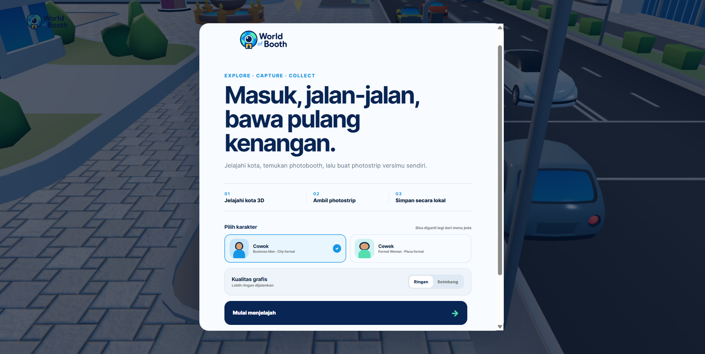

Available for selected builds
Digital products,
made to matter.
We turn complex operations into clear, dependable software—across web, mobile, AI, enterprise systems, and immersive 3D.

Strategy
Product design
Engineering
Launch & iteration
One accountable team from problem to product.
perpahmian.tech is an independent product engineering practice based in Indonesia. We work closely with founders and operating teams to define the right problem, design the workflow, build the system, and stay through delivery.
No theatre, no hand-off maze. Every decision is tied to the people who will use the product and the business process it needs to improve.
How we workSelected work
See all 18 projectsBuilt across the full product surface.
Engage us for a focused build or an end-to-end delivery. Scope stays clear, communication stays direct.
“The product should explain itself in use.”
That means fewer layers, clearer decisions, and engineering that respects the real operating environment.